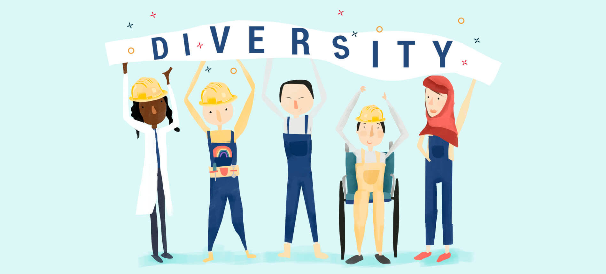
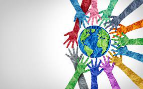

About cultural Diversity
Cultural diversity is about appreciating that society is made up of many different groups with different interests, skills, talents and needs.
More information on Cultural Diversity
Cultural diversity is celebrated every year on 21 May. In today's globalised world, cultural diversity plays a pivotal role in shaping our societies and workplaces. Cultural diversity refers to the presence of various cultural groups and individuals from different backgrounds within a single community or organization. In this document, we will explore the significance of cultural diversity, its many facets, its challenges, and its many benefits. We aim to shed light on how embracing cultural diversity enriches our lives and helps us build more inclusive and vibrant communities.
Importance Of Cultural diversity
Assimaliting

1.Learn about yourself.
1.Learn about yourself.
2.Learn about different cultures.
3.Interact with diverse groups.
4.Attend diversity-focused conferences
5.If you see anyone who is being culturally insensitive, speak out against it
6.Don’t force your beliefs on people with opposing views
7.Travel the world as much as you can to take part in cultures and un
Benefits of Cultural Diversity